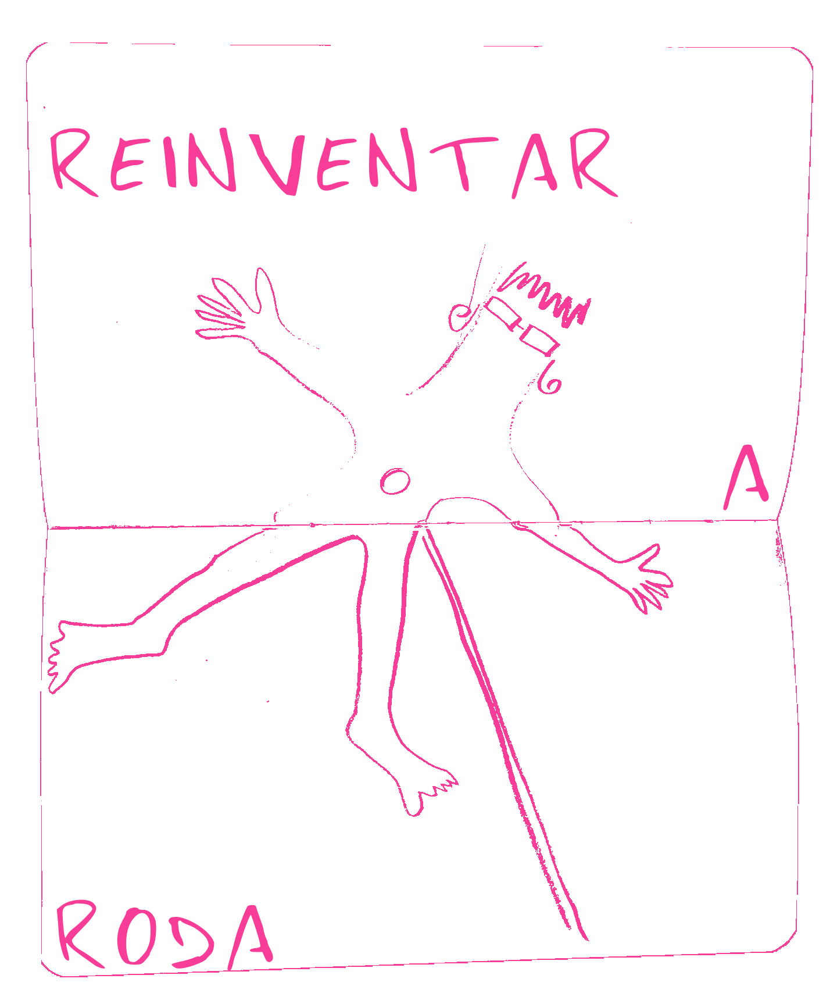
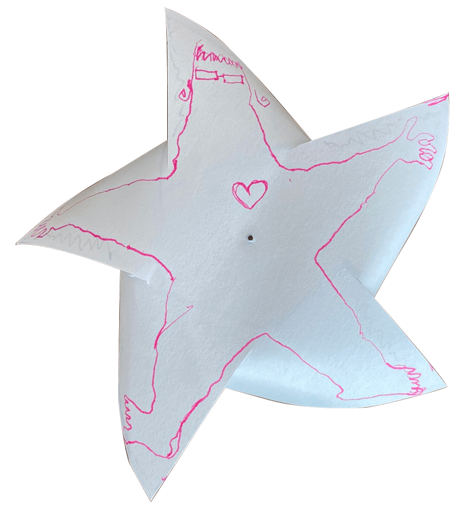

sobre ser obrigada a substituir o faz de conta pela performance e viver para sempre uma vida fingida de costas direitas e sorrisos falsos.
sobre tropeçar, cair e ter os joelhos em sangue.
sobre aceitar-me como mulher que por vezes tropeça.
sobre repensar, reapropriar, reinventar o género.
sobre repensar, reapropriar, reinventar o próprio.
sobre repensar, reapropriar, reinventar a roda.
#TRAGAMARODADEVOLTA
porque é que miúdas fazem 12 anos e deixam de fazer a roda?
porque é que eu deixei de gostar de rosa?
porque é que abandonei o mundo encantado das roupas de plástico e do faz de conta?
sobre mãos que já não tocam o chão com intensidade e pernas que não sobem ao ar.

Projeto em curso que nasce do pensamento obsessivo e reflexivo do corpo de trabalho que o antecede. A roda é aceite como símbolo para uma infância perdida.
projeto de Rita Ruivo, Ana Vitória Versos e desenvolvimento de Andreia Matos. Começado em 2026, para sempre em obras.